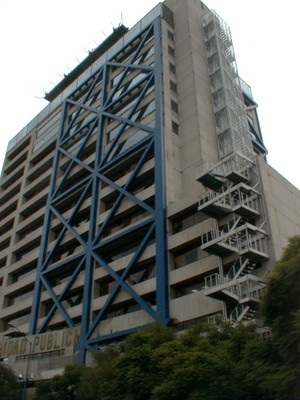
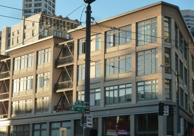
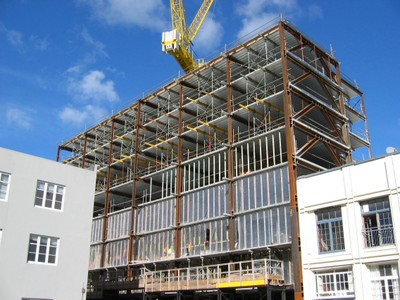
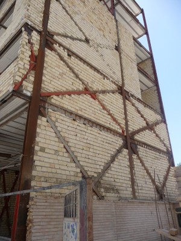
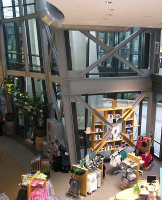
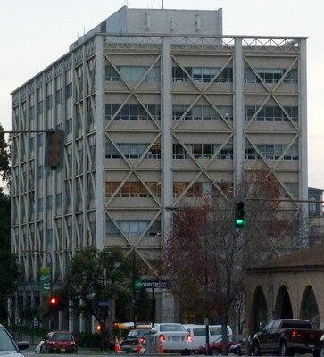

Pórtico arriostrado [LFBR]
Un marco de vigas y columnas en las que los miembros inclinados , a menudo estructurales diagonales, pegando el edificio y proporcionan resistencia y rigidez. El refuerzo puede tomar una variedad de formas. Si los miembros de la diagonal son fornido se resisten tanto fuerzas de tracción y compresión. Sin embargo, si son delgados , resisten sólo las fuerzas de tensión . Por lo general , los miembros de bastidor arriostrados están triangulados y se encuentran en las articulaciones (similar a una armadura vertical) . Arriostrados excéntricamente Marcos son la excepción - sus miembros inclinados se compensan deliberadamente en las juntas con el fin de crear regiones fusibles dúctiles en las vigas de acero . Los pórticos arriostrados pueden o no estar rellenos de mampostería.

Un dibujo simplificado de una estructura típica trama cruzada , con férula (A. Charleson, Seismic Design for Architects, Architectural Press 2008, p64 fig. 5.2).

Examples of different types of braced frames (A. Charleson, Seismic Design for Architects, Architectural Press 2008, p77 fig. 5.23).

Pórtico exterior arriostrado como un esquema de adaptación para un edificio de hormigón armado , México (C. Scawthorn)

Braced frame (Chevron braces), Seattle, USA (S. Brzev)

Marco de acero arriostrados excéntricamente en construcción, New Zealand (A. Charleson)

Marco de acero arriostrados concéntricamente en construcción, Canada (S. Brzev)

Pórticos concéntricamente arriostrados, India(A. Charleson)

Pórtico arriostrado, Iran (A. Charleson)


Pórtico de acero arriostrado, Seattle, USA (S. Brzev)

Pórtico de acero con riostras exteriores como una solución de reforzamiento , Hall University , Universidad de Berkeley , California (S. Brzev)


El estadio Birds Nest Stadium en Beijing, China tiene un sistema estructural arriostrado en 3D (S. Brzev)